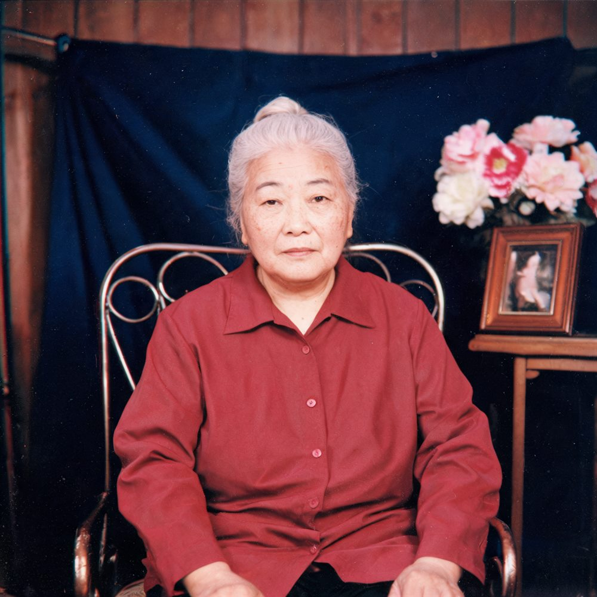
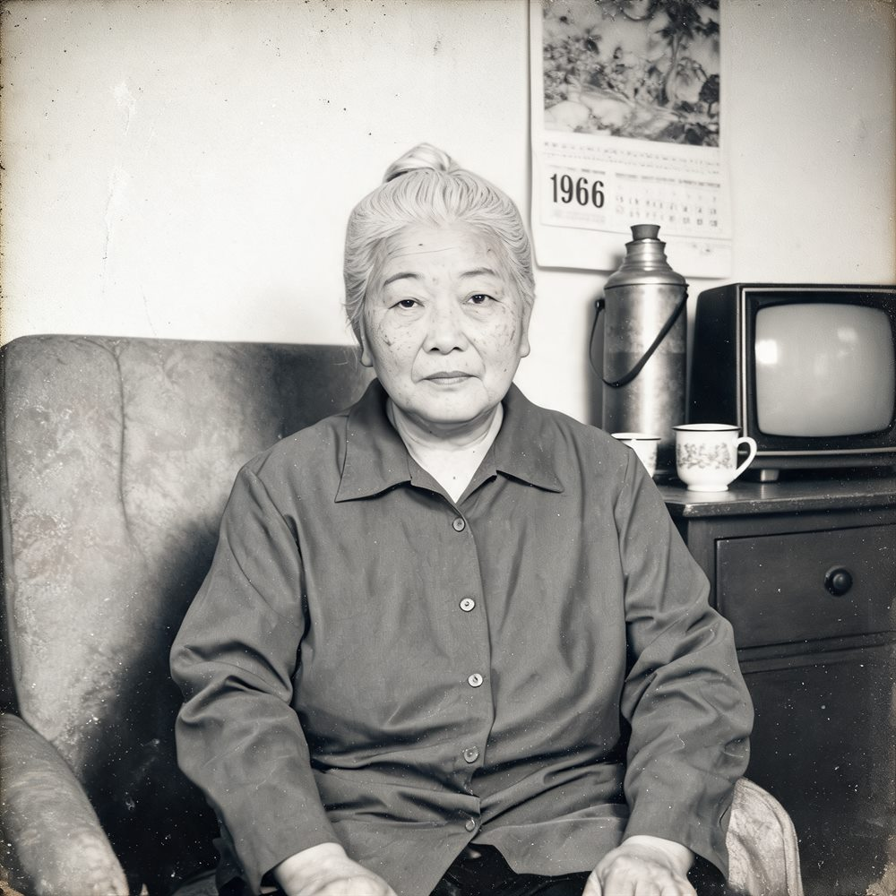
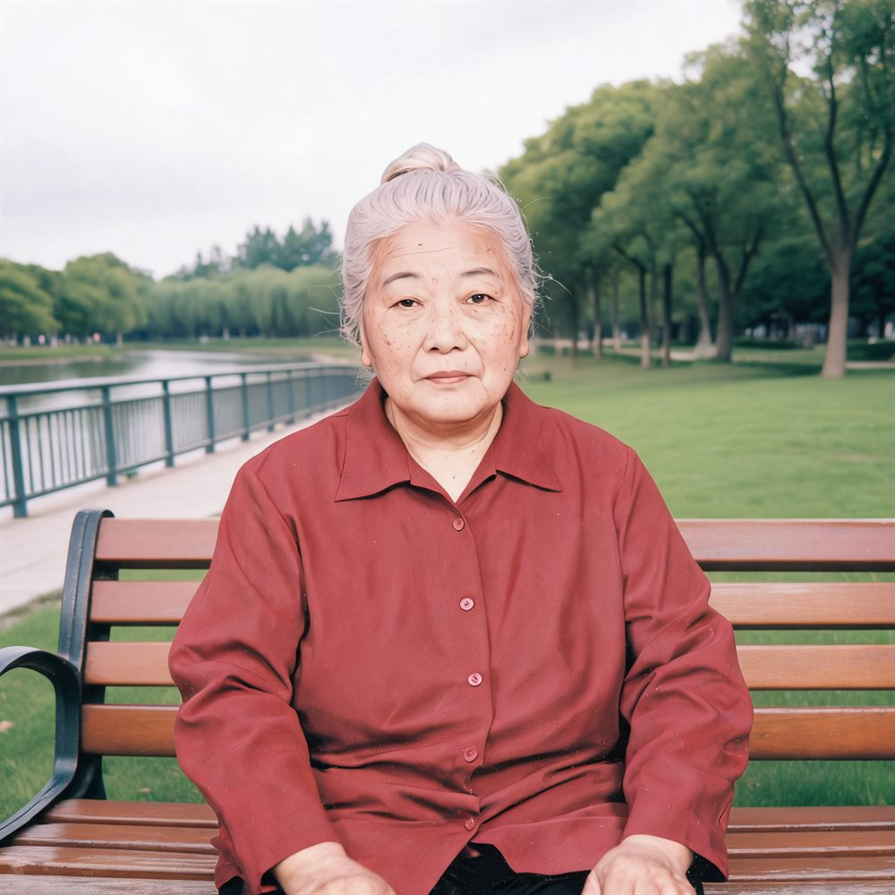
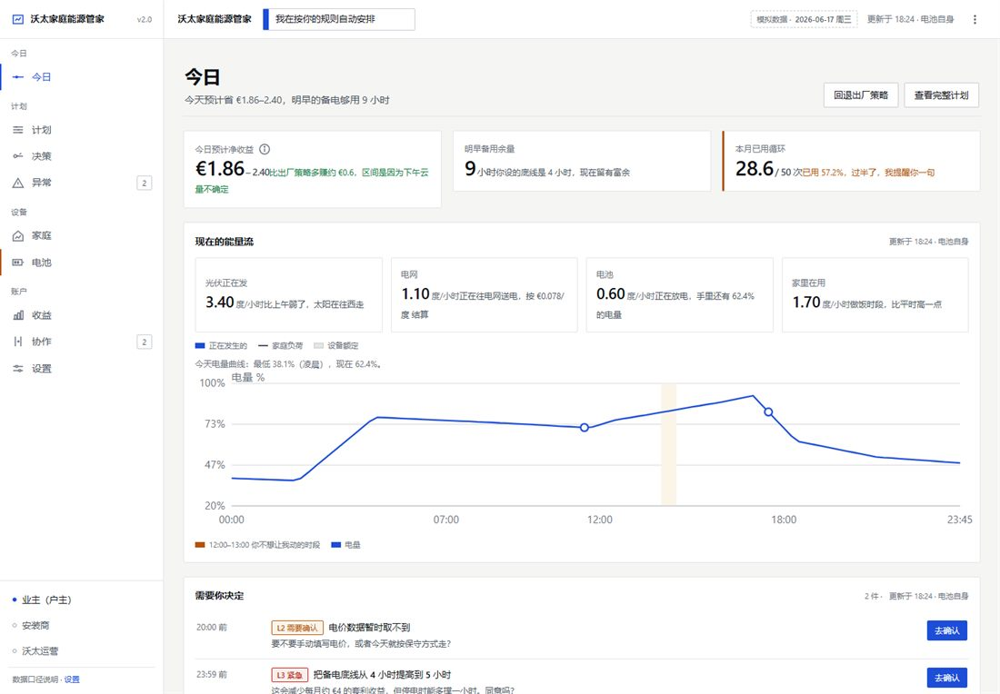
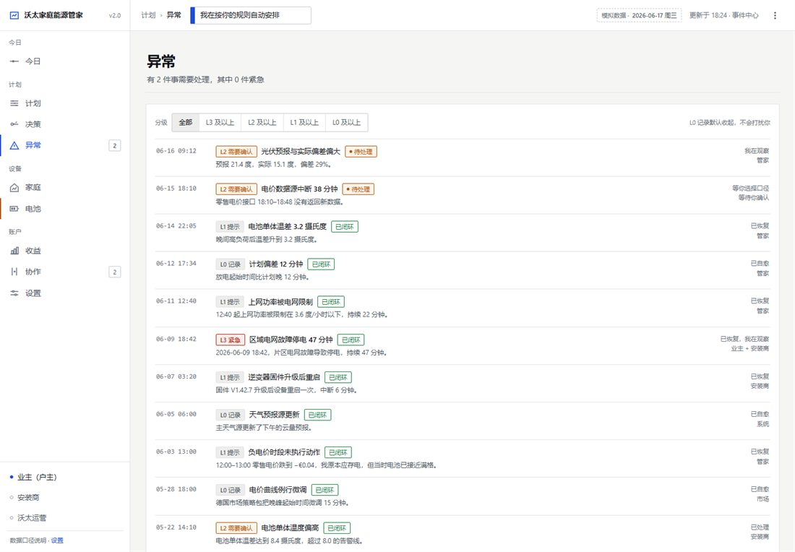
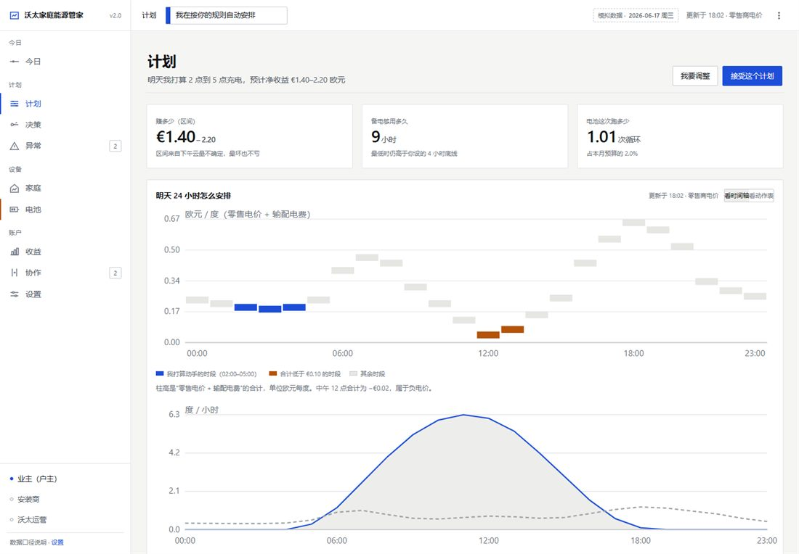
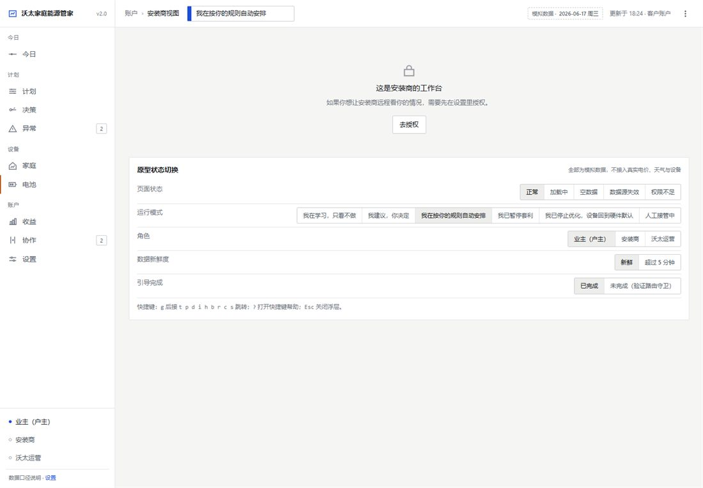
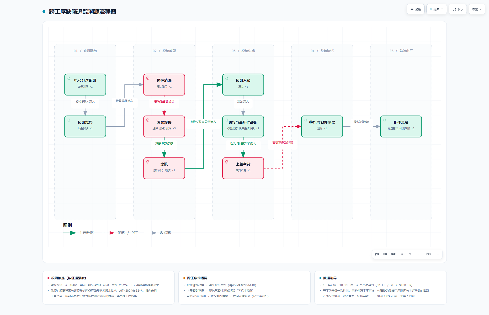

回家照相馆 · 旧照片身份锚点重建
个人项目 · 已开源 · 全栈应用
上传旧照片 → 提取面部特征作为「身份锚点」→ 按【年代 × 场景】生成同一人物的写实照。
定位取舍：这是照片重建，不是老照片修复——不做划痕与褪色修补，而是让同一个人出现在他从未拍过的年代场景里。这条取舍有 ADR 决策记录背书。



三张图是同一个 AI 虚构人物跨三个年代与场景，面部特征保持一致——由真实链路跑出来，不是拼图。全仓不含任何真实人物照片。
可验证的数字
（70 个测试文件）
（单测 22 + 自动 67）
值得说的工程细节
- 文档门禁：PRD 与代码不同步就构建失败，17 条断言全绿才放行——文档不是交完就烂的。
- 三层验收：A 层单元测试 22 项 / B 层自动化验收 67 项 / C 层盲测，把「我觉得没问题」换成可复现的判定。
- 身份锚点一致性：跨年代、跨场景生成时锁住面部特征，避免"换了个年代也换了个人"。
- 合规设计：照片授权声明永久留痕、生成图写入 AIGC 隐式标识、16 项审计动作全程记录。
- 真 / mock 双实现：上游接火山引擎方舟（Doubao 视觉理解做特征提取、Doubao-Seedream 做图像生成），但离线也能跑通全链路。
家庭能源管家 Butler · 产品设计
企业集训营课题 · 户用储能 App 产品设计 ＋ 可交互原型
一套户用储能 App 的产品设计交付物：10 篇 PRD，加一个 12 页可交互原型。
从「今天该什么时候充电」到「停电时够不够用」，产品要回答的问题都在用户家里，而回答它们需要解释、需要边界、还需要用户随时能推翻它。整套 PRD 围绕这一点展开，并用一个零依赖的单文件原型把 12 个页面全部跑通。
可验证的数字
（＋4 个一级导航分区）
（拆解补充至 50）
（59 个交互动作）
原型界面




截图取自原型真实界面；原型可在本页直接打开体验（零依赖、单文件）。
三条设计约束
- 护栏引擎是运行模式的唯一写入方：系统的运行模式只允许一个模块写，避免多入口写状态导致页面之间口径撕裂。
- 护栏之外还有一条硬边界：电压、保护阈值、并网参数这类安全参数，管家永不可触碰。
- 弃权也要解释：「今天放弃了一次套利」不是沉默，而是必须说明为什么放弃，并给出影响。
- 主动收敛口径：对照数据模型排查出总 PRD 中 3 处数据口径偏差（算例两数互相矛盾、收益恒等式不闭合），重新标定门槛值。
本项目出自企业 AI 黑客松集训营的课题，是个人练习作品，非任何公司的正式产品；文中金额、收益、比例为说明业务逻辑的示例假设，运行数据为模拟数据。
AI 视觉质检 · 两个自研 Agent Skill
企业集训营课题 · Agent Skill 设计 · 储能制造质检场景
在储能制造「AI 视觉质检（全工序）」的给定场景下、基于模拟数据，独立完成缺陷分级分析与跨工序溯源。
两个 Skill 分工：vision-qc-auditor 定「这套质检系统按什么原则取舍」，trace-diagram 把缺陷明细变成跨工序溯源图。

跨工序缺陷追踪溯源图（成品截图）。
可验证的数字
- 自写严重度加权分析脚本（致命 5 / 严重 2 / 一般 1），按月份窗口做集中度比对，输出 86 行定期排查报告。
- 质检报告 116 行：15 条缺陷样例、缺陷集中在 4 道工序（占 60%），识别出 3 个系统性问题。
- 能力边界写清楚：本数据集序列号唯一、无法串联同一物料的多工序路径，因此只做工序分布与周期性比对，不推断跨工序传递边。
制造业的底子，客户侧的手感
以及我为什么在做 AI 应用
先认识的是设备和人
本科读车辆工程，学的是机械设计、汽车理论、汽车电器与电控——所以储能柜里的液冷管路、BMS、气密性测试这些词，对我不是黑话。
但真正让我改主意的是站在客户面前的那段时间：在蔚来乐道做 Fellow 实习生，接待进店客户、讲产品、跑门店直播与账号运维，累计产出有效线索 100 余条；也在樊星装饰画做过带货主播，全身出镜、无稿件讲解，能独立撑完最长 4 小时不间断直播。更早还在中国移动做过客服助理，海外新媒体做过线上运营。
这些经历教我的是一件事：客户说不清自己要什么，但一定说得出什么让他不安。
再做 AI 应用
工科 + 客户侧的组合，落到储能行业正好卡在一个位置上：既要能把客户的顾虑翻译成需求与验收标准，也要能判断技术边界在哪、哪些话不能承诺。
所以在企业 AI 黑客松集训营里，我没有停在「学会用 AI 工具」，而是按完整链路走了一遍：写 PRD → 定验收标准 → 用 AI Agent 工作流实现 → 自建门禁跑测试 → 复盘取舍。上面三个项目就是这条链路的产物，每一个都开源、都能点开核对。
我想做的是能落地、能被验收的 AI 应用——不是概念演示。